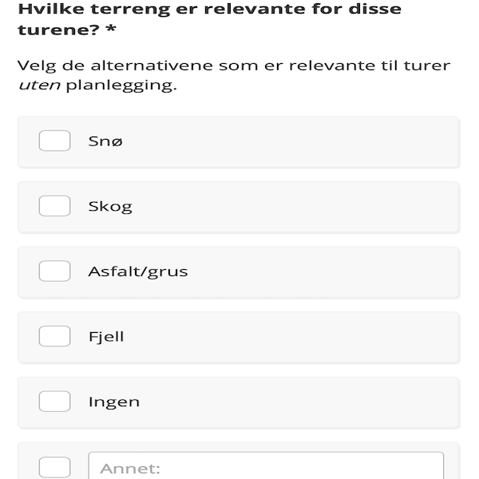
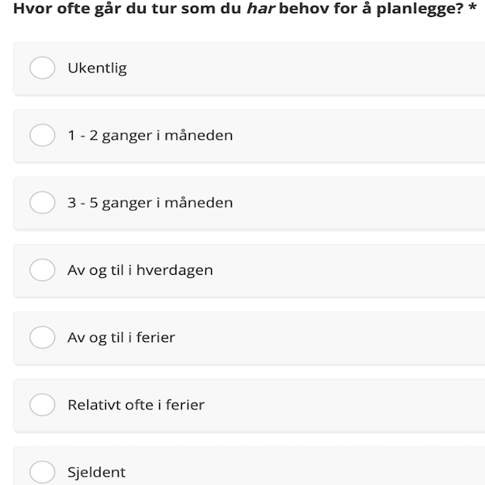

Et tverrfaglig skoleprosjekt hvor vi utviklet en android app som var knyttet til værdata fra MET API. Vår brukergruppe var turgåere. I tillegg til app, skrev vi en full rapport om prosessen Jeg hadde hovedansvaret for brukerene; gjennomføring av datainnsamlinger og brukertester, analyse, evaluering og brukertester. Med en annen designer samarbeidet vi godt for å komme frem til fornuftige metoder å anvende for innsamling av data.
Som innledende datainnsamling gjennomførte vi et videointervju med en DNT turleder. Vi fikk da en muligheten til å tilegne oss litt ideer om hva en turgåer gjør på tur. Vi fikk stilt noen konkrete og fikk gode samtaler som ga oss inspirasjon til en spørreundersøkelse En spørreundersøkelse er en passende metode siden vi ønsket å nå ut til så mange som mulig i målgruppen. Vi fikk mer kvantitativ data feks. “hvor ofte går du på tur?”, “hvor lenge går du på tur?” etc. Dette la grunnlaget for ideer og prototyper for en tur app. For testing av prototype benyttet vi oss av Figma slik at brukerene selv kunne interagere med appen. I tillegg brukte vi en spørreundersøkelse med spørsmål om designvalg fra prototypen og for senere testinger gjorde vi det mulig for brukerne å få neste test tilsendt på mail. Siden vi ikke fikk testet fysisk med brukerene var vi ekstra nøye på gode og forståelige beskrivelser og gjennomførte derfor pilottester. Vi lærte og reviderte brukertester før vi sendte den ut til brukerene. Vi benytte oss av denne brukertester to ganger fordi brukerne nå kjente denne og det fungerte godt for å få brukers tilbakemeldinger.
Resultatet ble til slutt en gjennomarbeidet tur app hvor brukerene kunne selv opprette en tur, legge til punkter på et kart over hvor de ville gå. Ved opprettet tur kan bruker se vær og farevarsel i turområdet, samt muligheten til å dele turen med andre eller invitere andre brukere til egen tur. Vår app var også 1 av 5 vinnere av prisen beste app (av 42 team) som beviser vårt harde arbeid.
Jeg fikk lært masse om hvordan man best kan jobbe i tverrfaglig teams, og med lite mulighet for å møtes fysisk på grunn av pandemien så ble jeg godt kjent med verktøyer som Notion, Slack og Zoom. Dette gjorde sammarbeidet lettere og arbeidet mer effektivt I tillegg har jeg lært litt Figma, android studio og hvordan bruke og få nytte av smidig utviklingsmetoder for best mulig prosjektarbeid.